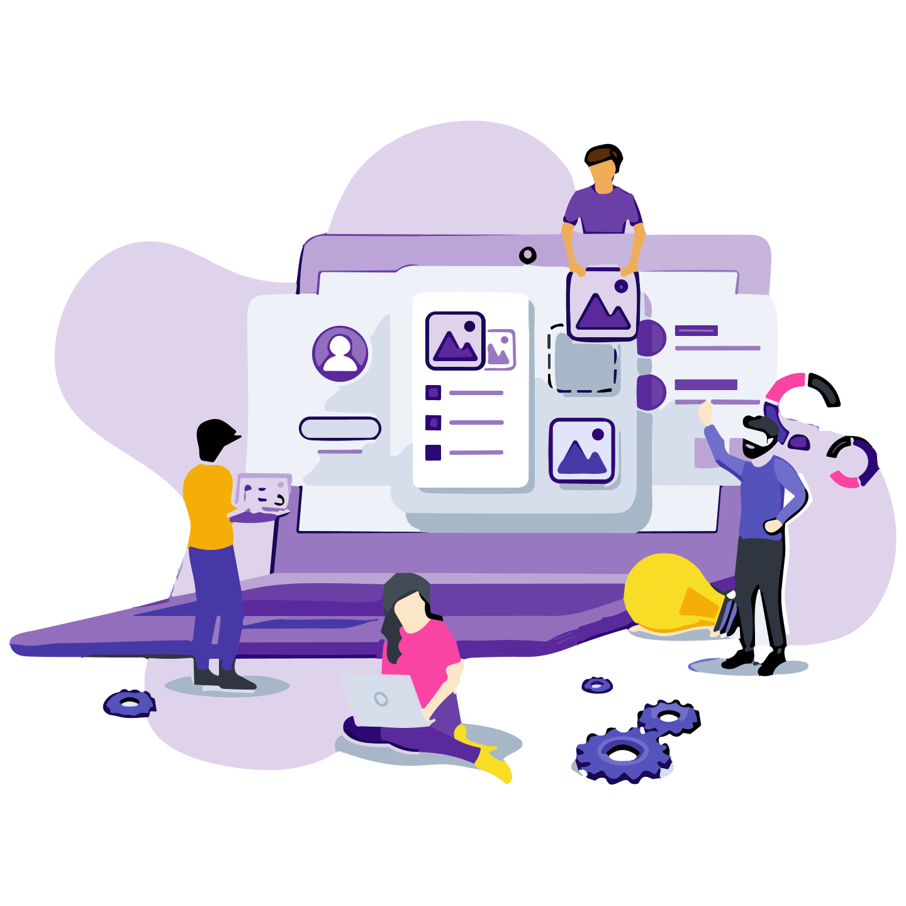

FONTE

- CIPOLI, Pedro. O que acontece quando ligamos o computador?. Canaltech, 2019. Disponível em: https://canaltech.com.br/hardware/o-que-acontece-quando-ligamos-o-computador-138327/. Acesso em: 21/09/2023
- MARTINS, Ricardo. POST (Power On Self Test). Knoow.net, 2016. Disponível em: https://knoow.net/ciencinformtelec/informatica/post-power-on-self-test/. Acesso em: 21/09/2023
- BASSANI, Anddré. O que é BIOS?. AdrenAline, 2023. Disponível em: https://www.adrenaline.com.br/artigos/o-que-e-bios/. Acesso em: 21/09/2023
- COUTO, César. BIOS, BOOT, CMOS e CMOS Setup. homepages, 2005. Disponível em: https://homepages.dcc.ufmg.br/~cesarfmc/classes/manut2/TeoricaSetup.pdf. Acesso em: 21/09/2023